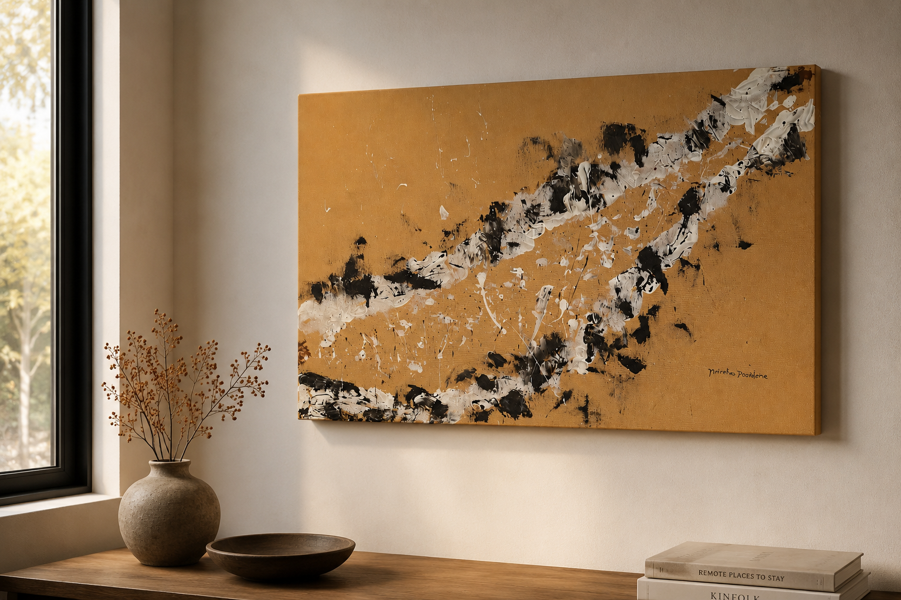
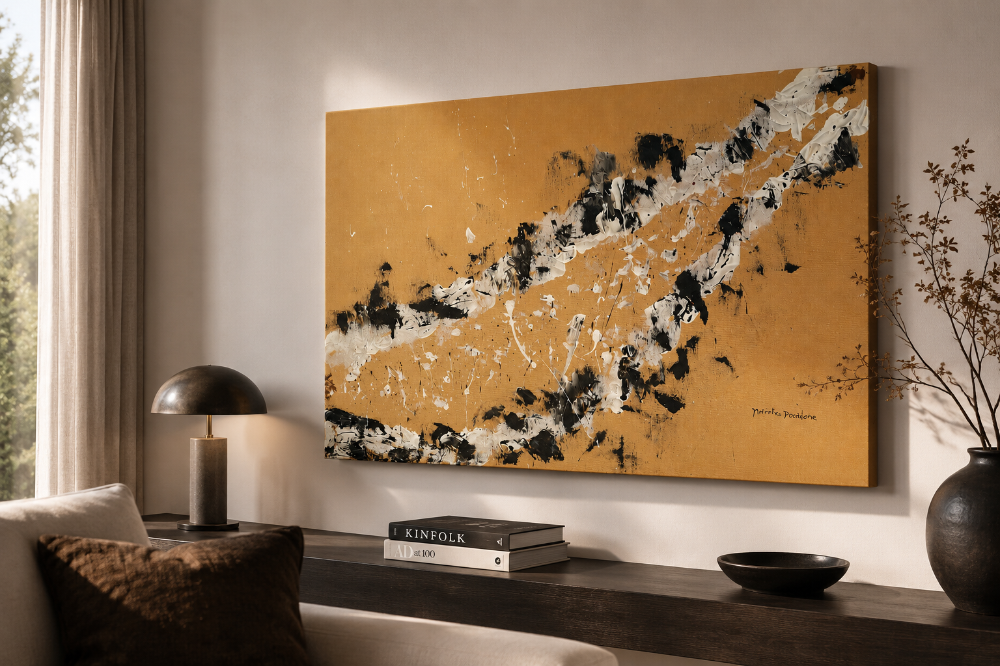
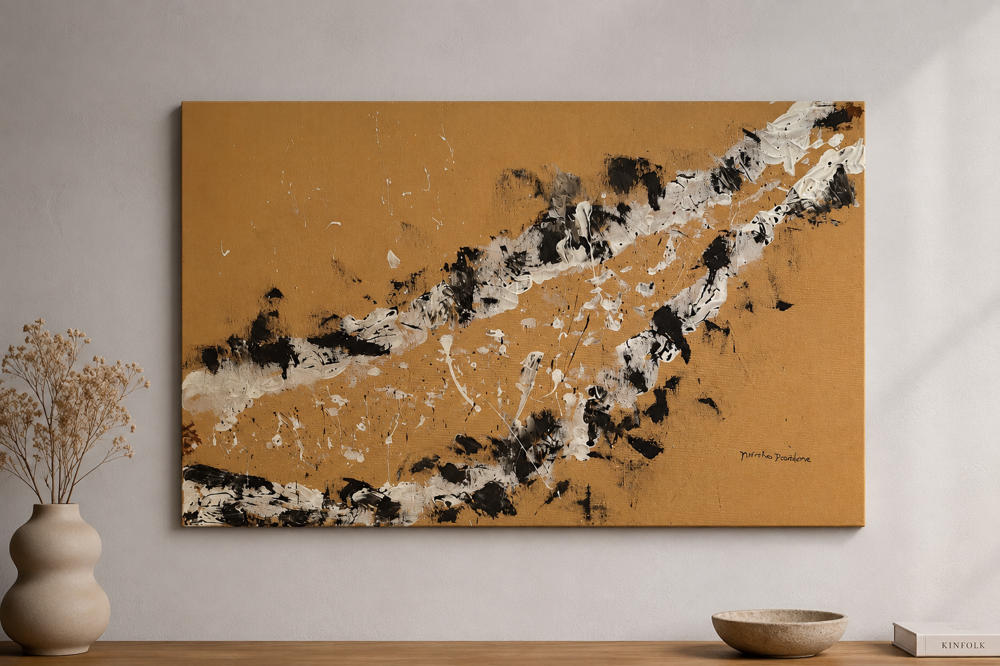

Abstracta Gallery · Collezione

Tra Silenzio e Impulso
Tra silenzio e impulso, la materia trattiene il gesto per un istante, prima di lasciarlo esplodere. La superficie ocra accoglie una traiettoria di bianco e nero che attraversa la tela come una tensione in movimento, tra attesa, attrito e trasformazione.
Il silenzio non è vuoto: è lo spazio da cui nasce l’impulso. Il nero incide, il bianco apre, mentre il fondo caldo e terroso mantiene l’opera ancorata alla materia.
Realizzata su tela 60 × 40 cm, l’opera è pensata per ambienti contemporanei dove la sua energia dialoga con materiali naturali, legni caldi e tonalità neutre.
Dettagli dell’opera
Dettagli e fotografie ravvicinate della tela.
Ambientazioni
Il quadro ambientato sulla parete.


